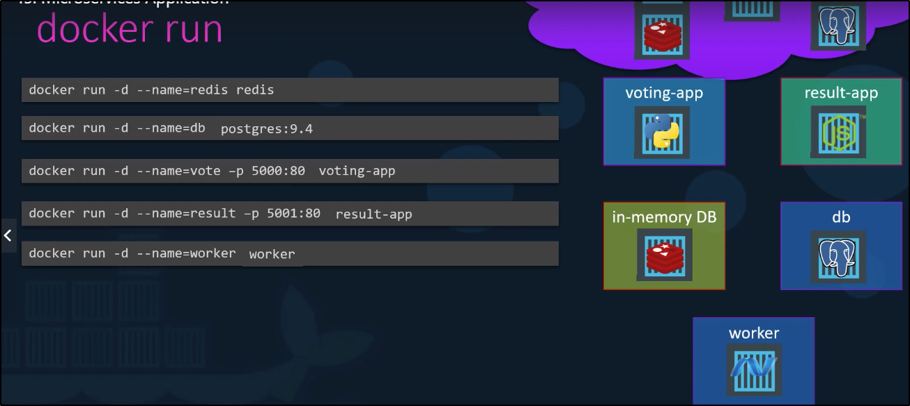

Ora provederemo a comprendere come funziona un architettura
a Microservizi e come deployarla su Cloud come Google Cloud.
NB: Questa completa app è disponibile su Docker! Qui si parla di Deploying di Container direttamente per ora!
Prendiamo questo applicativo di esempio:
Voting-App è una Web Interface in cui votare
In-memory DB è un DB in memoria (Redis)
Worker è un programma per gestire i voti
Db è un DB per salvare i risultati dei voti
Result-App è una Web Interface per mostrare i risultati dei voti.
Ora, supponiamo di creare il tutto su un singolo Docker Engine.
Supponiamo che l'immagini di Docker sono già buildate e tutto.
Startiamo un instanza detached "-d" di Redis e e PostgreSQL.
Inoltre, pubblichiamo le instanze delle Web App dalla porta 80 ed esponiamole su porte 5000 e 5001.

Ora tutte le instanze runnano sull'host ma non sono connessi tra di loro!
Dobbiamo dire, ad ogni instanza, come e a chi collegarsi per ottenere le informazioni giuste.
Per linkare i container, possiamo usare l'opzione "--link" del comando Docker.
Nella Web App inoltre, dobbiamo indicare l'host con il nome del Container da scegliere
(nel nostro caso "host=redis", dove "redis" è il nome del container Redis.
NB: Probabilmente i --link saranno deprecati, ma è meglio saperlo!